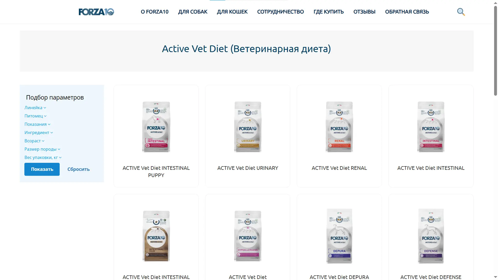
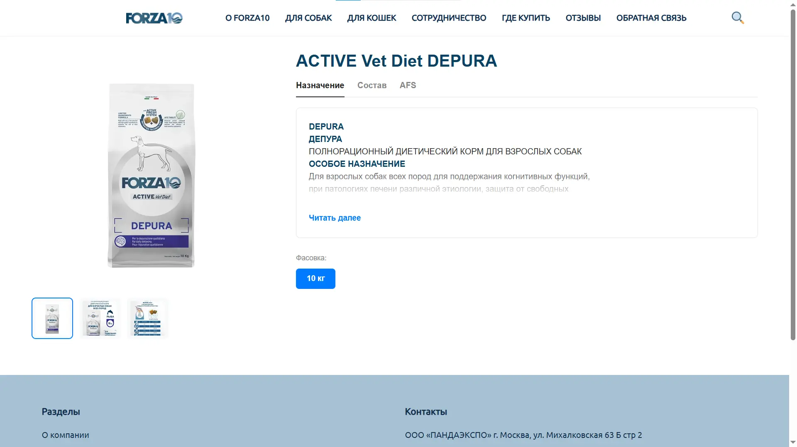
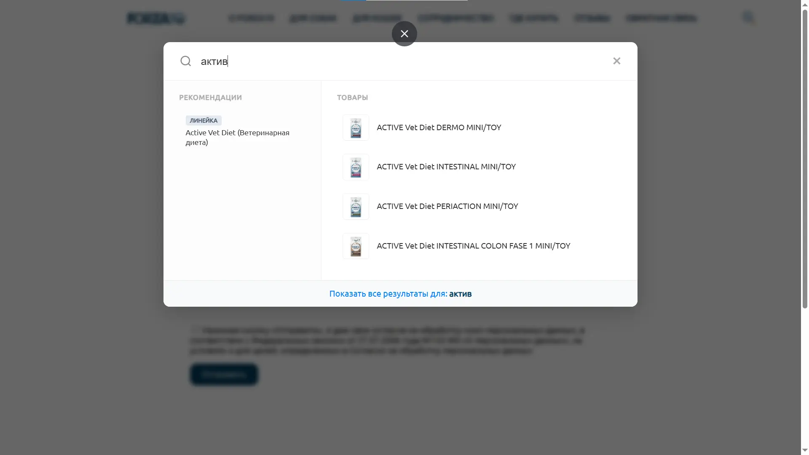
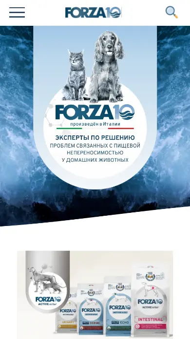

Forza10 — интернет-каталог ветеринарных кормов
Коммерческий сайт с нуля на 1С-Битрикс. Без дизайн-макета — от референсов и словесного ТЗ до готового продукта.

Задача
Разработать с нуля официальный интернет-каталог бренда профессиональных ветеринарных кормов Forza10. Требовался быстрый, масштабируемый и визуально выверенный коммерческий ресурс с корректным отображением на всех экранах.
Готового макета не было. На стартовом созвоне заказчик показал два референса — латвийский и итальянский сайты бренда — и описал, что хотел бы видеть. Задача — собрать финальный продукт из этого видения.
Что было сделано
Архитектура и CMS
- Развернул и настроил 1С-Битрикс с индивидуальной структурой шаблона в
/local/templates/forza10. - Спроектировал чистую файловую структуру и иерархию шаблонов — без лишних зависимостей, для высокой скорости загрузки.
- Настроил серверное окружение на Reg.ru.
Frontend и адаптив
- Реализовал адаптивную вёрстку на HTML5, CSS3 (Grid и Flexbox) и JavaScript.
- Проработал адаптивную шапку, мобильное бургер-меню, интерактивный поиск, сетку каталога и карточки товара.
- Стилизовал и интегрировал компоненты каталога, меню и навигации.
Работа без макета
- Проанализировал два сайта-референса, выделил ключевые блоки и логику, собрал структуру будущего сайта.
- Работал в режиме живых правок: требования менялись по ходу — удерживал единый стиль и не терял сроки.
Как это выглядит

Каталог с сеткой товаров

Карточка товара

Умный поиск: находит «Active» по запросу «актив»

Мобильная версия + бургер-меню
Технологии
CMS
1С-Битрикс
Frontend
HTML5, CSS3 (Grid, Flexbox), JavaScript
Backend
PHP (API Битрикса, D7)
Инструменты
VS Code, Reg.ru
Результат
Готовый коммерческий каталог с чистой архитектурой, быстрой загрузкой и корректным отображением на всех устройствах. Сайт запущен и работает.
Отдельно стоит отметить: проект собран без дизайн-макета — от словесного ТЗ и референсов. Это потребовало не только технической работы, но и умения слышать заказчика, предлагать решения и адаптироваться к меняющимся требованиям.